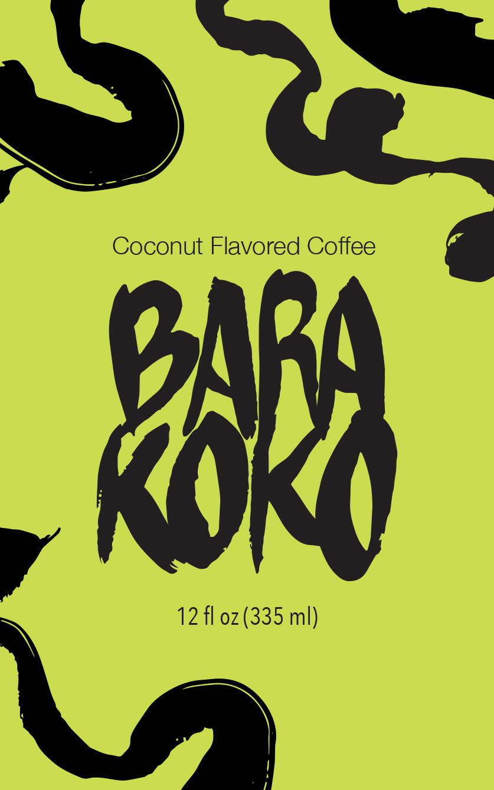

CAN DESIGN
For our ART120 Typography course, we created a custom can design in which typography serves as the primary visual element, exploring how type and font choices can shape brand identity. I chose to design a fictional can brand inspired by Filipino flavors, allowing both the concept and visual style to reflect Filipino culture.
I drew inspiration from the vibrant visual language of the Philippines, particularly the expressive calligraphy and hand-painted lettering commonly seen on jeepneys that were iconic symbols of Filipino street life. To capture this aesthetic, I experimented with plaka paint and black ink using a variety of brushes, aiming to replicate the organic strokes characteristic of Filipino sign painting. This process allowed me to explore the fluidity and rhythm of hand-drawn calligraphy, observing how paint naturally pools, tapers, and responds to pressure.
Once I was satisfied with the inked letterforms, I scanned and digitized them, carefully refining the edges while preserving the imperfect, handmade character of the original strokes.

THE MAKING
I explored various Filipino fonts and lettering styles, drawing inspiration from hand-painted signs and jeepney art to capture an authentic look. Using plaka paint and brushes, I created the letterforms on paper, experimenting with different strokes to achieve a dynamic and organic feel. Once satisfied with the inked designs, I digitized the artwork using Adobe Illustrator, refining the edges while maintaining the handmade quality of the strokes. The final design was then applied to a sleek can mockup in Photoshop, incorporating vibrant colors and textures that evoke the tropical essence of the drink.
ABOUT BARA KOKO
Bara Koko is a bold and refreshing soda that blends the rich depth of coffee with the creamy sweetness of coconut, capturing the essence of Filipino flavor traditions in a modern, carbonated twist. Housed in a sleek, green can, Bara Koko's flavor tastes from the nutty aroma of roasted beans reminiscent of kapeng barako, to the subtle creaminess of buko (young coconut), a staple in Filipino desserts and drinks.
The name “Bara Koko” fuses “barako” (a strong native coffee) with “koko” (a playful nod to coconut), reflecting a beverage that’s both energizing and easygoing. Perfect for hot days, creative breaks, or cultural cravings, Bara Koko is more than a drink — it’s an island escape in a can.

